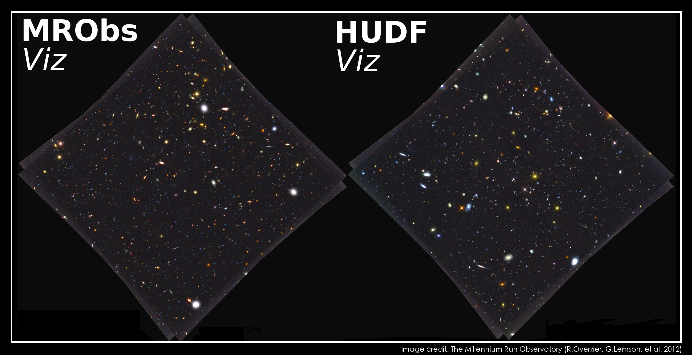
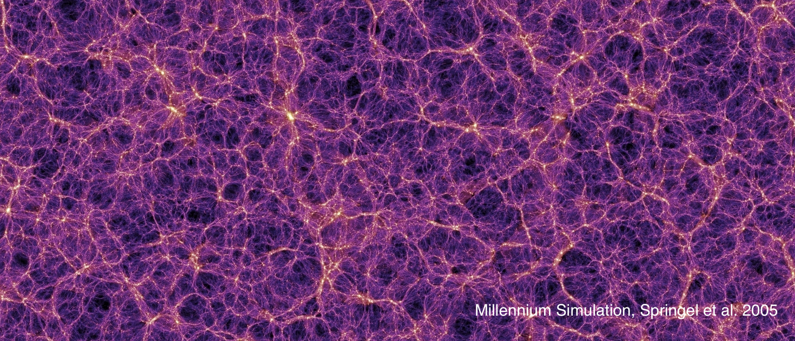

Welcome to the L-Galaxies webpage! L-Galaxies is a cosmological-scale semi-analytic simulation of galaxy evolution, which runs on the dark matter
halo "merger trees" generated by N-body simulations of hierarchical structure formation.
Thanks to its semi-analytic nature, L-Galaxies is able to model the evolution of many millions of galaxies from very early times to the present
day much more efficently than hydrodynamical simulations of comparable size. This makes L-Galaxies ideal for testing models of astrophysical
processes, as well as studying statistically-significant samples of galaxies and the supermassive black holes they host. For more information
on the physics models included in L-Galaxies, see here.
L-Galaxies has been continually developed for over a quarter of a century and is based on the seminal works of White 1989; White & Frenk 1991;
Kauffmann et al. 1993,1999; Springel et al. 2001,2005. The completion of the Millennium Simulation
in 2005 enabled implementation of the model onto dark matter simulations of high enough resolution to detect the structures associated with the
formation of individual galaxies throughout cosmologically relevant volumes. Updates to the baryonic physics have resulted in a series of publicly
released catalogues that have been widely used by the community.
The code and sample output catalogues from recent L-Galaxies versions can be downloaded here.
Output data can also be obtained from the
Millennium Database via the SQL interface or
TOPCAT.
For access to the full database (including L-Galaxies 2020 tables), see
here.
L-Galaxies vs. observations

Left: A mock HST image of a lightcone from the L-Galaxies simulation. Right: The real Hubble Ultra Deep Field (HUDF).

A slice through the Millennium simulation. L-Galaxies is run on dark matter halo merger trees generated from N-body simulations such as Millennium.
Below are links to download the outputs, code, and documentation relating to recent versions of L-Galaxies.
Henriques et al. (2015)
updated earlier models through an improved representation of the build-up of the galaxy population over time.
This was done by (a) updating the underlying cosmology to that of Planck-1, (b) adapting the reincorporation timescale for gas to
re-accrete onto haloes, and (c) raising the virial mass threshold above which ram-pressure stripping can act on satellites. The model
parameters of this L-Galaxies model have been thoroughly calibrated against a set of observables from z=0 to z=3 using an MCMC technique.
Henriques et al. (2020)
improved on the Henriques et al. (2015) model by adding a radially resolved treatment of the formation and evolution
of galaxy discs. This model also includes an H2-based star-formation law, as well as a detailed chemical enrichment model with explicit
mass-dependent delay times for SN-II, SN-Ia and AGB stars. The model parameters of this L-Galaxies model have been thoroughly calibrated
against a set of observables from z=0 to z=3 using an MCMC technique.
Yates et al. (2021a)
improves the galaxy chemical evolution (GCE) modelling in the Henriques et al. (2020) model by significantly increasing
direct metal ejection into the circumgalactic medium (CGM) by supernova feedback. These more metal-rich outflows allow L-Galaxies to better
match the observed chemical composition of galaxies and their surroundings at both low and high redshift, without requiring increased mass-loading factors,
in contrast to many other galaxy evolution models.
Ayromlou et al. (2021b)
built upon the model by Henriques et al. (2020), introducing a sophisticated methodology to represent gas stripping processes
within and beyond the halo boundary. This method uses the measurement of the local background environment (LBE) of galaxies without diminishing
computational speed and efficiency. The model parameters of this L-Galaxies model have been thoroughly re-calibrated against a set of observables from
z=0 to z=2 using an MCMC technique.